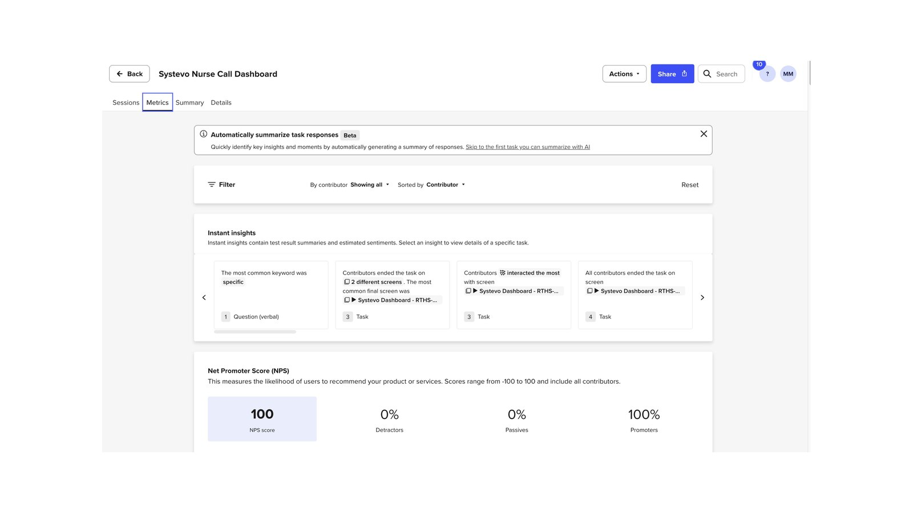
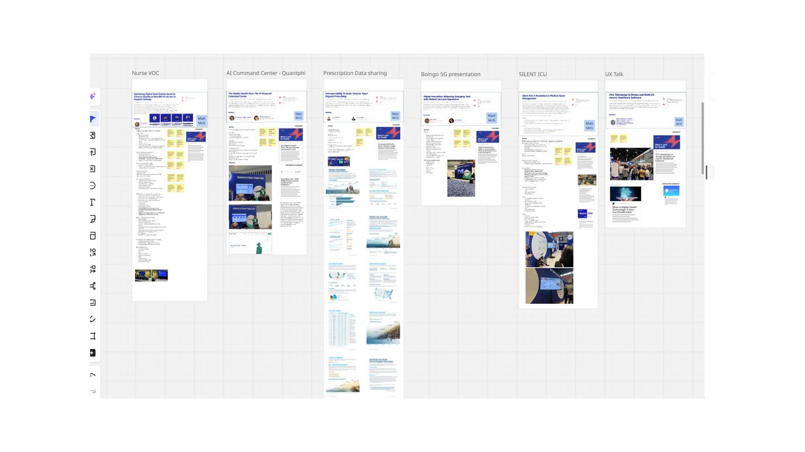

Honeywell · Dashboards · Analytics · Healthcare
Systevo Nurse Call
Nurse call dashboard analytics for hospitals — surfacing call volumes, response times, and staffing insight in real time.
The Product
An analytics dashboard for the Systevo Nurse Call system: hospital administrators see call activity, average response times, pendant and room status, and staffing patterns at a glance, so units can spot bottlenecks before they affect patient care.
The Process
The design was validated with moderated and unmoderated UserTesting studies and grounded in a broad competitive scan of nurse-call and clinical-communication platforms, with research boards and flows maintained in Figma.

